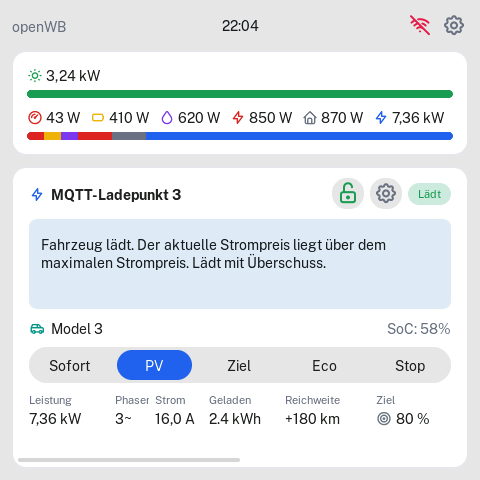
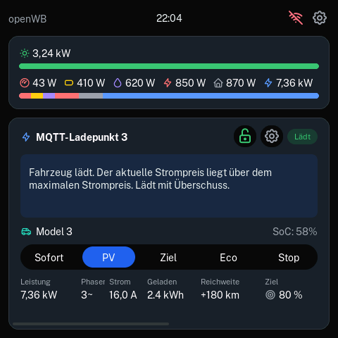
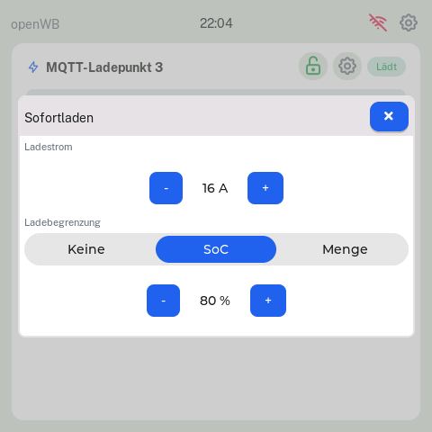
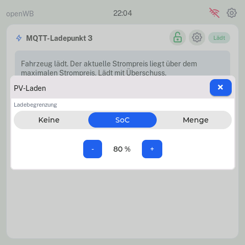
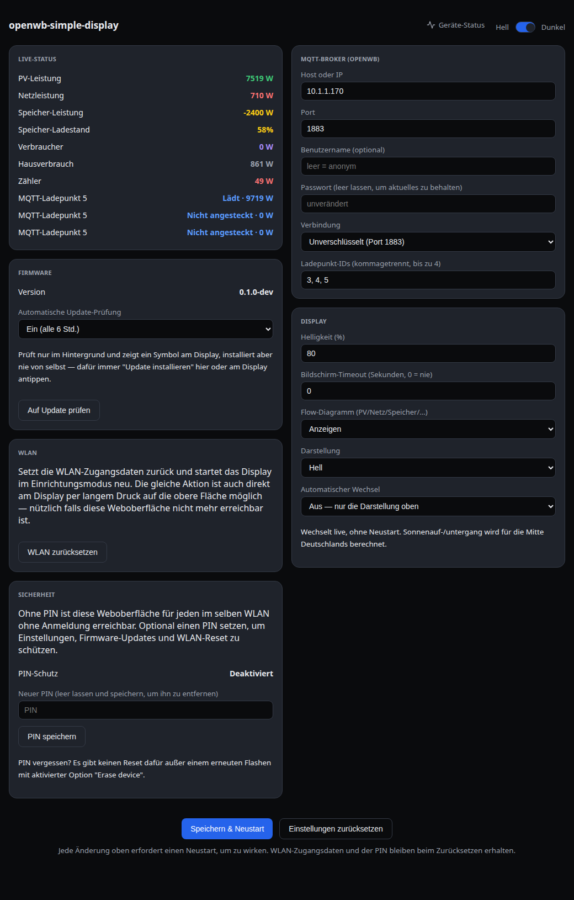

openWB Simple Display
Ein kleines ESP32-S3-Touchscreen-Display für openWB- Ladestationen: Ladepunkt-Status auf einen Blick, Touch-Steuerung von Lademodus, Ladestrom und Sperrzustand — ohne App, ohne Cloud, direkt über MQTT mit deiner eigenen openWB-Installation verbunden.


Funktionen
- Live-Status: PV, Netz, Speicher, Verbraucher und jeder Ladepunkt auf einen Blick
- Touch-Steuerung: Lademodus, Ladestrom, Ladebegrenzung, Eco-Preis, Sperren/Entsperren
- Lokale Weboberfläche für Geräteeinstellungen, erreichbar per Browser im eigenen Netzwerk
- Firmware-Installation und -Updates direkt im Browser, ohne Toolchain
- Hell/Dunkel wahlweise fest, nach Uhrzeit oder nach Sonnenauf-/untergang — live, ohne Neustart
Voraussetzungen
Eine laufende openWB2-Installation (MQTT-basierte Software), deren MQTT-Broker im lokalen Netzwerk erreichbar ist. Standardmäßig ist das ohne weitere Konfiguration auf openWB-Seite der Fall.
Installation
Firmware direkt im Browser flashen — mit Chrome oder Edge, ohne Software-Installation.
- Display per USB-C-Datenkabel (kein reines Ladekabel) mit dem Computer verbinden.
- Unten auf „Firmware installieren" klicken und im Browser-Dialog den seriellen Port des Displays auswählen.
- „Install" wählen und warten, bis der Flash-Vorgang abgeschlossen ist (ca. 1–2 Minuten).
Einrichtung
- Nach dem Flashen zeigt das Display ein eigenes WLAN namens
openwb-simple-display-setup— mit dem Handy oder Computer damit verbinden. - Im sich öffnenden Einrichtungsassistenten das eigene WLAN sowie Host, Port, Benutzername und Passwort des openWB-MQTT-Brokers eintragen.
- Nach dem Neustart in der lokalen Weboberfläche die erkannten Ladepunkte der eigenen openWB-Installation ankreuzen (bis zu 4) — ohne mindestens einen ausgewählten Ladepunkt zeigt das Display keine Daten.
- Das Display zeigt daraufhin innerhalb weniger Sekunden die Live-Daten der konfigurierten Ladepunkte.
- Weitere Einstellungen (Helligkeit, Firmware-Updates, optionaler PIN-Schutz)
über die lokale Weboberfläche unter
http://openwb-simple-display.local.
Jedes Symbol, jede Einstellung und jeder Handgriff im Detail: siehe die vollständige Anleitung.
Mehrere Ladepunkte
Bei mehr als einem konfigurierten Ladepunkt kommt ein Energiefluss-Diagramm (PV, Netz, Speicher, Hausverbrauch, …) über einer wischbaren Ladepunkt-Kartenreihe hinzu — jede Karte lässt sich auch einzeln per Wisch erreichen.
Touch-Einstellungen je Lademodus
Ein Zahnrad an jeder Ladepunkt-Karte öffnet ein Popup mit genau den Feldern, die openWBs eigene simpleAPI zum Schreiben anbietet — Ladestrom und Ladebegrenzung bei Sofortladen, Ladebegrenzung bei PV-Laden, maximaler Strompreis bei Eco-Laden.



Einstellungen
Helligkeit und Firmware-Updates direkt am Display, alles andere (MQTT-Broker, Bildschirm-Timeout, PIN-Schutz, automatischer Hell/Dunkel-Wechsel, WLAN-Reset) über die lokale Weboberfläche — mit eigenem, vom Display unabhängigem Hell/Dunkel-Umschalter. Ausführliche Erklärung aller Felder in der Anleitung.



Hardware
Gibt es baugleich unter mehreren Händlernamen (Guition, Sunton) und in einer Variante mit eingebauten Relais für Smart-Switch-Anwendungen — für dieses Projekt reicht die einfache Version ohne Relais. Wo man sie bekommt, passende Gehäuse/Halterungen und Details zur Stromversorgung: siehe Anleitung.
Qualität
Jeder Commit durchläuft automatisiert: Firmware-Build für die reale Hardware, native Unit-Tests (MQTT-Parsing, Konfigurationsspeicher, Sonnenauf-/untergang- Berechnung, Update-Manifest) sowie ein Rendering-Vergleich jedes Bildschirms gegen bekannte Werte — bevor überhaupt reale Hardware angefasst wird.
Quellcode
MIT-lizenziert. Quellcode auf GitHub.
Unterstützung
Macht dir dieses Projekt die Arbeit leichter? Über einen Kaffee freue ich mich.
Dies ist kein offizielles Produkt der openWB GmbH & Co. KG. Der Autor arbeitet jedoch eng mit dem openWB-Team zusammen und entwickelt auch darüber hinaus Software für das Projekt.